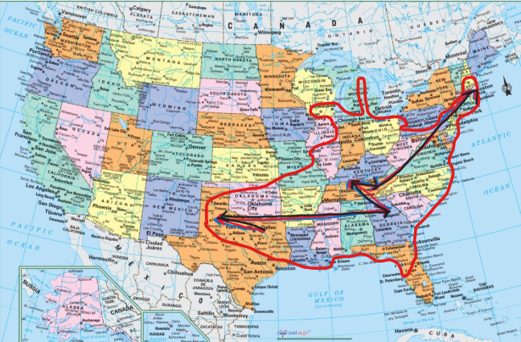

Top Ten cities in the United States I've been to unordered

I've only been within the circle but have seen
pretty much all parts within the circle.
So this list isn't really
that informative ig lol
Black line is whereI've lived
Madison, WI
New york, NY
New Orleans, LA
Cambridge, MA
Louisville, KY
Washington D.C.
Knoxville, TN
Atlanta, GA
Savannah, GA
Philadelphia, PA
cities I weirdly like a lot for some reason: - Meridian, MS - Charlottesville, VA - Calico Rock, AR - Mobile, AL - Providence, RI - Post, TX - Greenville, SC - Tulsa, OK - Evansville, IN
Cities I really don't like : - Columbia, SC - Panama City Beach, FL - Clarksville, TN - Branson, MO - Charlotte, NC - Seaport neighborhood - Texarkana, TX/AR